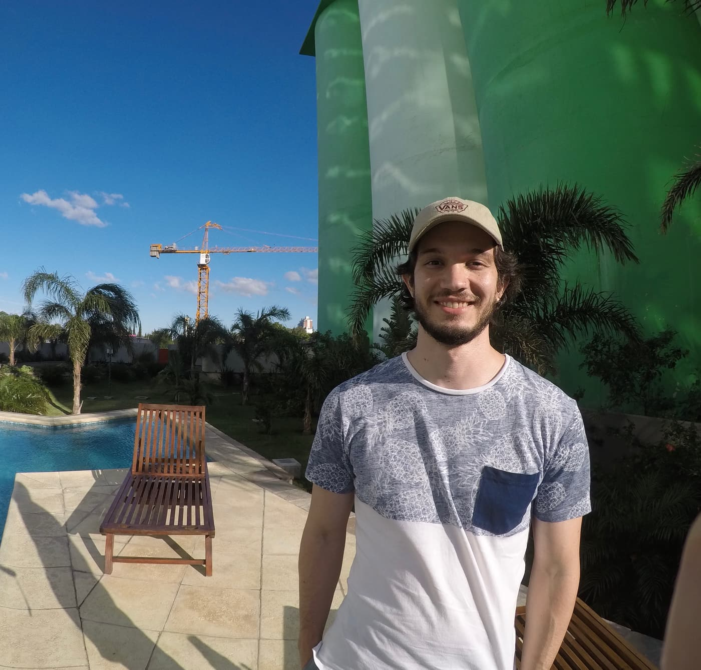

Featured
Persia DB
Think SQLite for search.
An embedded, single-file search database, written in Rust. Fast, typo-tolerant search inside your app — no server, no cluster. Go and TypeScript SDKs are planned.

Backend developer
Rosario, Argentina
I am a backend developer. Most of my work is in Go, and I also work in Rust. I have been in the industry for several years, across many technologies and languages, with experience in monoliths, microservices, REST APIs, event-driven applications, and more. LinkedIn has a more detailed account.
01
I was born in Rosario, Argentina. I like playing sports, especially football, and spending time with my family. Watching movies is another hobby, especially drama, science fiction, action, and comedy. My favourite director is Martin Scorsese.
I can work on cloud-native apps using AWS, DigitalOcean, and Google Cloud, and I also like working on engines that process data, or with other interfaces: TCP, the command line, and queues. I have a strong background in security.
Besides that, I always try to keep myself up to date with everything related to my tech stack. Reading books, and keeping public repositories on GitHub, helps me a lot with that.
I enjoy using Go for new experimental projects in my free time, like my own cache, a web scraper, or trying WebAssembly.
02
Public repositories. Persia DB, an embedded search database in Rust, comes first. Terrex, a human-curated web search engine, is next.
Featured
Think SQLite for search.
An embedded, single-file search database, written in Rust. Fast, typo-tolerant search inside your app — no server, no cluster. Go and TypeScript SDKs are planned.
Featured
A human-curated web search engine.
Frontend for Terrex, an open-source web search engine with a human-curated index. No tracking, no ads, and no AI overviews — just links. The public repository is terrex-web, a SvelteKit app that talks to the Terrex REST API.
More repositories
tomiok/queuety
At least once delivery message broker, built on BadgerDB. TCP based.
Gotomiok/fuego-cache
Concurrent hashed key-value cache written in Go, with HTTP, plain TCP, and CLI interfaces, and persistence on disk.
Gotomiok/vaultik
Cloud-agnostic secret manager to create, read, update, and delete variables. Values are encrypted, and can be exported to a remote location or any cloud.
Gotomiok/patients-API
Proof of concept using Go, Chi, PostgreSQL, Docker, and Docker Compose. Exposes REST API endpoints.
Gotomiok/webh
Self-contained Go library with a production-ready web server, including safe startup and shutdown, middlewares, and error handling.
Gotomiok/minesweeper-API
REST API for the Minesweeper game, using Go, Redis, and Docker.
Go